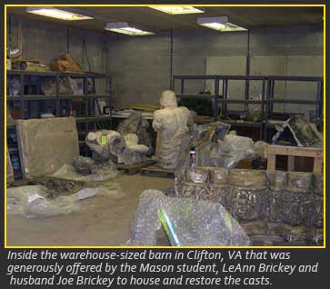
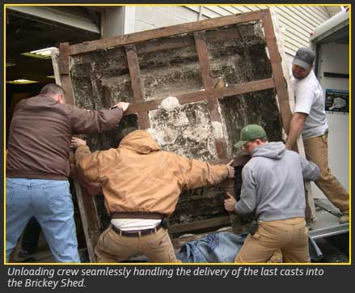

Part IV: Arrival and Parting Thoughts

The rest of the trip home was uneventful, except for the state troopers who picked up on us in every state we traversed. The cruisers or unmarked sedans approached our small caravan - car on truck's tail in the slow lane, 45 miles per hour, both with hazard lights on. They followed closely for about five minutes, then fell back slowly. Towards the end, the car pulled ahead of the truck, and the driver noticed in her rearview mirror just how poorly the truck's front bumper was hanging on. It looked like the letter "C" on its side. Exhausted but determined, we made it home by 6:30 p.m. The next day we drove to our storehouse and workshop, Joe Brickey's "Shed" in Clifton, met our gracious unloading crew from GMU's Carpentry Shop, Nick Xhiku, our potential restorer, and Carol Mattusch, our mentor and project manager. The casts were unloaded so swiftly and so well that it made the loading in the Bronx appear laughable. But we did it! And the truck rental company refunded the charge!
All in all, the experience was a crash course like no other, and we are grateful to all those who helped make it happen. Our unrelenting determination to acquire additional plaster casts for the university was propelled by our involvement in the entire process. Our hope is forGeorge Mason University to recognize its entire collection with the same objective as that of the Metropolitan Museum: to form "a more or less complete collection of objects illustrative of the History of Art from the earliest beginnings to the present time." We hope that George Mason's collection of plaster casts will endure the test of time and continue to stimulate interest in history and art history.
Bibliography
Elizabeth Milleker, "A Brief History of the Cast Collection at The Metropolitan Museum of Art," Sotheby's: Historic Plaster Casts from the Metropolitan Museum of Art, New York (New York, 2006).
Lindsay Pollack, "Private Art Sales by Christie's Sotheby's Become More Public: The Met's Plaster Casts" Bloomberg.com: Culture, 17 Feb. 2006; Sotheby's: Historic Plaster Casts from the Metropolitan Museum of Art, New York (New York, 2006), nos. 9, 10, 31.
"Sotheby's Price List," 28 Feb. 2006, http://webprod.ny.sothebys.com/event/sale/jsp/SalePriceListView.jsp?sale_id_txt=N08176.
Carol Vogel, "Going to Auction: Pieces of History," Inside Art, The New York Times 13 January 2006.
- Lucy R. Miller